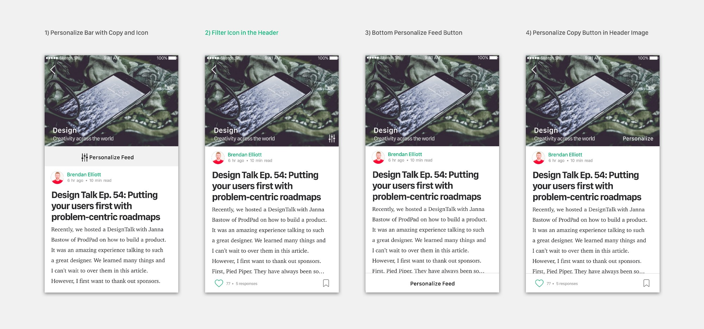

As an aspiring designer, I am an avid user of Medium. I have found that the web and mobile versions are used in different ways. While I use the web to write and read longer articles, I only use the mobile app to read short articles on the move.
If I can’t find interesting content quickly, I often quit the app. As a result I use the app far less than I use the web version.
I wanted to see if this was a universal problem, because it eliminates opportunities for engagement in the app through sharing and clapping for articles. This could be threatening to Medium’s new business model, where users will be paying for content.
My hypothesis at the beginning of this study was: People don’t use the Medium app because they have a hard time finding content worth reading in a short time frame. With this in mind, I put my hypothesis to the test and observed how Medium users interacted with the app.
I interviewed six Medium users, with interests that varied from creative to technical, by observing how they used the app and asking about their pain points with the experience. This is what I learned:
While my hypothesis was partially right, it was not specific enough. I believed that finding interesting content was the main problem, but rather the problem was that users do not have enough control over the content that they see.
People want to control the content on their feeds, but they can’t because the current Personalize feature is too limiting in content curation ability.
After gathering my research and identifying a people problem, I asked my friends, Mihir Chauhan and Ravi Belsare to help brainstorm potential features.
We addressed the problem with how might we statements, thought up problem areas and brainstormed potential solutions.
After our session we came up with two potential experiences areas to improve.
After several feature explorations, I decided that the best solution was to redesign the Personalize feature with filter elements that would be most useful to users. I made this decision because it best addressed the user needs that were not being met in the current design.
A majority of content curation in common apps, including the Medium app, is done in the onboarding stage. According to my research, this process leaves the users feeling like they have limited control once they are using the app, because they do not know how to go back and adjust their interests.
However, there are apps that have content filters in the app. For example, Facebook has filters for its store and news feed, Flipboard for its feeds and Feedly for its main feed. These personalization features with direct control the user can see is the kind of experience Medium needs to provide for its users.
Taking what I learned from market and user research, I created initial explorations of what an improved Personalize feature might look like and tested it with Medium users to find out what filters would be most useful to them. I discovered three common trends in user feedback:
Through my user testing and feedback, I found out that users usually have a variety of interests and filtering one Feed would be a potential pain point. Different Feeds would allow easy context switching and filtering of interests.
I decided that Feeds would be created by selecting a single topic, like Design, to be the overall theme of the feed. By default, the Feed would be populated with articles about the theme, but the user would now be able to use an improved personalize feature to continuously filter the Feed.
To begin, I explored several interface designs of cells to test how the Feeds would be displayed. I decided against option 2 because the design was too similar to the new Series design and I wanted to maintain the UI difference. Option 3 did not convey that there was a horizontal scroll and option 1 took away a main feature of the feed, the Updates. I decided on option 4 because I did not want to fully disrupt the mental model users have of the main page, nor take away a main feature.
I moved the “Your Updates” to the top row and put Feeds in its current spot. I based this decision on my user research where I found that nobody that I interviewed used the top feeds to find articles because they are curated for them and often don’t align with their interests. I believe this information hierarchy best matches the users’ needs.
My Feed design is based on the current Medium feed design from the top bar. Within this, I explored different entry points for the personalize feature. After testing these options I decided on option 2 because, after feedback, it was the most commonly recognized as a personalization entry point and the least disruptive.
Creating a Feed will be done through an entry point on the Main Page and selecting or searching for a general theme. The Feed would then slide into the first place in the horizontal scroll.
Article length was one of the most universally agreed upon filter elements in my user testing. I experimented with different levels of control that ranged from direct input, a two way slider and buttons.
I chose the buttons because I found that too much control leads to a cognitive overload and the feature wouldn’t be used as much. Simply switching between clicking buttons is one click, rather than several with the other steps, like the slider. The Short, Medium, and Long ranges would be pre-decided based on factors like average article length and the most popularly read article lengths.
I originally included 1 and its full screen version in my prototype, but from feedback I decided it was disruptive to have the extra step of seeing a half screen window before clicking search. For 3, I found that there were too many clicks to find search results and the disorganization of 4 was disruptive and had potential for cognitive overload.
I ended up landing on 2 because it sticks to the standard of how users toggle between options and add and delete tags.
After visual design explorations and combining the different filter elements, this was my next iteration. Users would be able to click in from the icon entry point, switch article time range and search and select filter elements.
However, feedback on this design showed that the visual design created a confusing information hierarchy. Here it seems like the “Time Range” title refers to everything underneath it because there is nothing separating the search area from the time range. It also makes the Article Length section seem more important when they are meant to be equal.
To fix this, I made the title copy smaller, so as to not conflict with the title of the page, and split Article Length and Personalize Content up into two cells to show they are separate.
One final thing I learned from my feedback was that the process of adding tags/people/publications in my Personalization feature design was confusing because users were unsure of which feed it went to. While it was assumed that the tag went to the feed the user was on, did it also go to other feeds? Was adding to a feed the same as following?
To address this, I explored different options that included adding a “Follow” and “Add to Other Feed” button. However, adding these buttons threatened to diminish the significance of the Follow feature and create a feature overload.
I decided to keep the action of adding a tag/person/publication the same and keep the Following affordances separate. In the Personalize feature, these elements would just be added to the current Feed, where following for the main feed would be throughout the app it its current form. I also included an option to add tags that the user already follows. The intention behind this was to show that this feature just adds to the current Feed and doesn’t affect who the user follows.
Upon deciding my feature, I explored different interactions and and potential UIs for the feature. After exploring and getting feedback on my designs, I decided on two interactions for my feature.
Select feed→ Select settings icon→ Click search→ Search→ Select→ Exit

I chose this interaction because it allows for simple, quick changes. Clicking the entry point filter icon causes the feature to slide up and pressing done slides it back down. Once this happens, feedback is show on the feed that changes were made.
Select article→ Read content→ Select settings icon→ Click search for tag→ Search→ Save

This next interaction is very similar to the first, but the entry point is in an article. It allows users to select and search for tags/people/publications while reading in a Feed, in case they come across an interesting topic.
Click here to see a prototype I made in Framer to show the basic user flow of adding tags to the feed.
After final qualitative user testing, I received positive feedback from my original users that my design solved their problem. Since this was an independent study, I was not able to test it in development to see if it would significantly increase engagement. However, this initial feedback is a sign that I am on the right path.